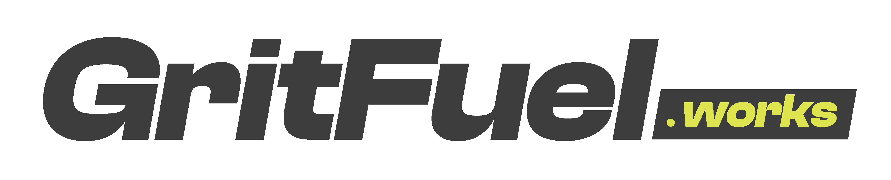
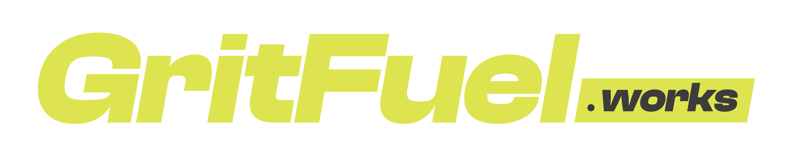
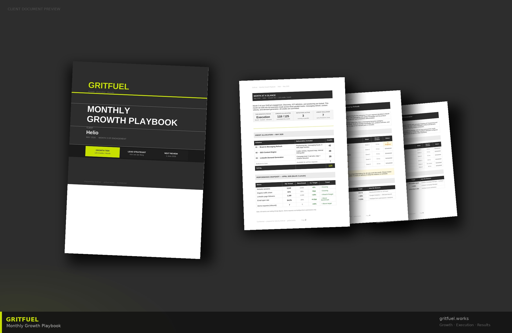

Human
thinking.
Relentless
execution.
The brand, voice, and system behind the growth operating system. GritFuel OS.
Growth shouldn't feel like gambling.
Most SMEs burn their marketing budget the same way every year. New agency, new deck, new reset. The strategy is a one-off. The execution is a scramble. And the learnings walk out the door the moment someone changes tools.
We built GritFuel because growth shouldn't be rebuilt every quarter. It should compound — every playbook informs the next, every euro spent teaches the engine more, and every month the system knows your business better than the last.
We're not an agency. We're not a fractional CMO. We're the first Growth Operating System — strategy, execution, and compounding intelligence in one monthly subscription. One contract. One score. One place the story gets smarter.
Purpose & Promise.
Our purpose
Purpose is our north star — it changes slowly (if ever) and gives every team member, partner, and investor the same reason to show up.
Our promise
Promise is what a client can hold us to. If they don't feel it after 90 days, the system is broken — and we own the fix.
Category claim
Use this exact phrasing when introducing GritFuel in external copy. "Growth Operating System" is always capitalised; "OS" is acceptable in technical contexts only.
Six principles.
The decisions we make without being asked. When in doubt about a choice — visual, verbal, commercial, or strategic — return here.
Compound over one-off.
Every output should make the next output smarter. No orphan work. If it doesn't feed the engine, we question why we did it.
Evidence over opinion.
Show the numbers and the method. Never argue from authority. A dashboard beats a deck; a score beats an anecdote.
System over service.
We're building a product, not staffing an account. Every manual ritual is a bug; every repeatable pattern is a feature.
Direct over diplomatic.
Say what's working, what isn't, and what we're changing. Clients hire us to cut through — not to flatter. No hedging, no jargon.
Variable over fixed.
Credits flex to the month. Teams flex to the work. Costs flex to the client. The system never forces a shape that doesn't fit.
Partner, don't posture.
Our clients are builders. So are we. No vanity awards, no buzzwords, no performance theatre. Just the work and the score.
What's inside.
Identity.
Four voice principles.
Voice is not tone. Voice is the same everywhere (our DNA). Tone flexes by channel and moment (our delivery).
Direct
We say "CAC dropped 38%" not "we observed a notable reduction in customer acquisition costs of approximately 38%". If a sentence reads like a consultancy, we cut it.
Confident
"Paid media has plateaued — we're rebalancing to organic" beats "it might be worth considering whether paid could potentially be plateauing". Confidence is earned by evidence, not softened by qualifiers.
Analytical
Every claim is testable. Every recommendation has a reason. Every dashboard has the math behind the metric. If we can't back it, we don't say it.
Collaborative
Our clients are builders. We build with them, not at them. Use "we" for shared work, "you" for their decisions, "I" sparingly and only from a named person.
How it sounds.
Same message, two ways. The left column is us. The right column is what we're explicitly trying not to be.
Tone shifts. Voice doesn't.
One voice, five tones. Use the channel matrix to calibrate without losing the GritFuel fingerprint.
| Channel | Tone | Do | Don't | Example opener |
|---|---|---|---|---|
| Punchy. POV-led. First-person where relevant. | Lead with a number or a sharp claim. Short lines. One idea per post. | Hashtag soup. Inspirational quotes. Carousel clichés. | "We just cut a client's CAC by 38%. Not magic. Here's the playbook…" | |
| Client email | Warm, specific, direct. | Name. Specific subject line. Number in the first line. Action at the end. | "Hope you're well." "Just touching base." "As per our last…" | "Lars — Score moved +7 this month. 3 things to flag, 5 min read." |
| Sales call | Consultative, confident, collaborative. | Ask 3 questions before pitching. Show the scoring method early. Admit limitations. | Over-promise. Mention "synergies". Pretend every client is a fit. | "Before I pitch, what's the growth bet you'd regret most if it didn't pay off in 6 months?" |
| Product UI | Neutral, functional, human. | Clear verbs. One instruction per screen. Plain language on errors. | Clever microcopy. Emoji. "Oops!". Passive-aggressive empty states. | "Score ready. Review the month's Playbook →" |
| Investor deck | Analytical, big-picture, evidence-first. | One claim per slide. Numbers on every slide. Method before metric. | Buzzwords. Unrealistic hockey sticks. Category hand-waving. | "675 clients. €38.8M ARR. Here's the engine behind both." |
| Proposal / SOW | Crisp, costed, specific. | Name the deliverable. Name the credits. Name the date. | "Up to…" ranges. Scope ambiguity. Stock images. | "90-day plan: 3 deliverables, 42 credits, first playbook by Day 14." |
Rule of thumb: if the tone shift costs you clarity or confidence, you've gone too far.
Words we use.
Words we don't.
Use these
Playbook · Compound Score · Engine · Signals · Loop · Credits · Rebalance · Score · System · Operator · Evidence · Method · Rhythm · Compounding
Build. Test. Optimize. Ship. Score. Rebalance. Pivot. Compound. Accelerate. Cut. Double. Pull. Prove. Measure. Kill.
"Your growth, on the same page." · "One score. One board. One direction." · "Evidence before opinion." · "The month compounds." · "Strategy that ships."
Avoid these
Synergies · Holistic · Leverage (as a verb) · Value-add · Best-in-class · World-class · At-scale · Thought leadership · Strategic alignment · Disruptive · Revolutionary · Game-changer · Deep dive · Circle back · Touch base
"Bold brands" (we used to say this — stop) · "Growth partner" · "Full-service" · "360°" · "Tailor-made" · "Bespoke" · "Storytelling" (as the product) · "Passionate about…"
"Kind of" · "Sort of" · "Arguably" · "Potentially" · "It might be worth considering…" · "We feel that…" · "To some extent" · "In our humble opinion"
Naming conventions
| Thing | Form | Example |
|---|---|---|
| Brand | One word, camel-case in logotype, Title elsewhere | GritFuel (never Gritfuel, never Grit Fuel) |
| Domain | Lowercase, orange ".works" in brand contexts only | gritfuel.works |
| Product suite | Proper noun, capitalised | GritFuel OS (the growth operating system) |
| Tools | Proper noun, capitalised, no version numbers in copy | Onboarding Intake · Monthly Playbook · Growth Dashboard · Escalation Router · Compounding Engine |
| Metric | Title Case, "Compound Score" always proper | Compound Score · Credit Pool · Channel Momentum |
| Tiers | Single word, no trademarks | Core · Growth · Performance |
The hierarchy.
From tagline to proof, in descending order of abstraction. Never skip levels — if you lead with proof, warm them up with the claim first.
Strategy + execution together. No vendor-juggling.
The Compound Score. Board-ready in 30 seconds.
Every month, the engine knows more. Switching cost compounds.
Identity.
Monogram first. Lock-up when it's a new viewer's first touch.
Two marks, one system. The monogram is the default on everything we own — website, product UI, decks, socials, swag. The primary lock-up (with the .works tag) is reserved for first impressions off our own surfaces, where we're teaching the domain.



When to use which
Monogram on everything we own — repeat exposure lets the mark do the work without repeating the domain. Lock-up when a viewer is meeting us off-property (ad, press, partner deck, cold outreach) and we need them to remember the URL.
Clear space · minimum size
Clear space equals the x-height of the "G". Monogram: 32 px / 10 mm minimum. Lock-up: 120 px / 25 mm minimum. Favicon & app icon use the monogram only.
The .works tag
The .works suffix is a teaching device, not a brand accessory. It earns its place off our own surfaces. On our surfaces, the monogram is enough — the context already carries the domain.
How not to use it.
The logo works because it's disciplined. The mistakes below erode brand recall faster than any design choice you can make.
The arrow.
Our secondary mark. Focused motion and measurable progress. The arrow appears where the logo doesn't — favicons, UI, overlays, background pattern, swag.
Usage
- As a favicon / app icon (pictogram version, square)
- As a UI bullet or directional marker
- As a background motif at 20-40% opacity
- As a sticker / swag / merchandise pattern
Don't
- Use as a substitute for the logo
- Repeat in a tight pattern (looks like wallpaper)
- Rotate beyond 45° — it should always point forward/up
- Combine with the logo at the same scale
The core palette.
Four colours do all the work. Discipline in the ratio matters more than invention in the palette — always 70% white · 20% charcoal/gray · 10% accents.
RGB 60 60 60
CMYK 68 62 60 50
Pantone — match DS
RGB 146 146 146
CMYK 45 37 38 2
Pantone Cool Gray 7
RGB 222 228 80
CMYK 16 0 83 0
Pantone 388 C
RGB 252 78 43
CMYK 0 84 88 0
Pantone 1655 C
Meaning & usage
| Colour | What it means | Where to use it | Where NOT to use it |
|---|---|---|---|
| Charcoal | Authority, precision, depth. The voice. | Headlines, body, logo, structural type, dark panels. | Never as a flat background for full pages (use for key panels only). |
| Gray | Calm, neutral, supporting. | Meta, captions, secondary UI, neutral data rows. | Not for headlines or CTAs. |
| Lime | Energy, momentum, moments of brand recall. | Tagline highlights, CTA text on dark, accents, arrow, charts. | Body copy. Headlines on white. Long UI surfaces. |
| Orange | Impact, urgency, attention. Used sparingly. | Eyebrows, warnings, key stat call-outs, hero moments, .works tag. | Long-running UI, backgrounds larger than 25% of a page. |
Tints, shades & semantics.
Extended system for product UI and data viz. The four core colours stay primary — everything below is a modulation or a functional colour.
Tints & shades
#1E1E1E
#3C3C3C
#555555
#929292
#E5E5E3
#A9AE30
#C5CB3D
#DEE450
#ECF090
#F2F5C4
#B32F15
#E23A18
#FC4E2B
#FE8D74
#FEDCD2
Semantic colours (product UI only)
Status, confirmations, positive deltas
Approaching limits, attention needed
Destructive actions, validation errors
Informational, neutral highlights
Accessibility contrast.
WCAG 2.1 AA requires 4.5:1 for body text and 3:1 for large text (≥18px bold or ≥24px regular). This is the non-negotiable minimum — we aim for AAA on all new product UI.
| Foreground | Background | Ratio | Body (AA) | Large (AA) | Verdict |
|---|---|---|---|---|---|
| Charcoal | White | 11.6 : 1 | ✓ | ✓ | Use anywhere. |
| White | Charcoal | 11.6 : 1 | ✓ | ✓ | Use anywhere. |
| Lime | Charcoal | 9.3 : 1 | ✓ | ✓ | Use anywhere (high-impact pairing). |
| Orange | White | 3.1 : 1 | ✕ | ✓ | Large type only (eyebrows, headlines ≥24px). |
| White | Orange | 3.3 : 1 | ✕ | ✓ | Large type only. OK on buttons, CTAs, badges. |
| Lime | White | 1.3 : 1 | ✕ | ✕ | Never for text. Lime on white = decorative only. |
| Gray | White | 2.9 : 1 | ✕ | ✕ | Caption only. Use Charcoal 500+ for body. |
| Charcoal 500 | White | 7.4 : 1 | ✓ | ✓ | Secondary body use. Passes AA & AAA. |
70 · 20 · 10.
Every layout, page, screen, or slide should hit (roughly) this distribution. Accents earn their place by being rare.
When to break the rule
Covers and part-dividers break the ratio on purpose — saturated lime or charcoal drives recall at the threshold moments (first impression, section breaks).
When to tighten
Long-read content, reports, and data-dense dashboards should push closer to 80 / 17 / 3. Less accent = more trust in the numbers.
Lime vs. Orange
Lime is the signature accent (energy, category, brand recall). Orange is the alarm accent (urgency, warning, moment of impact). Don't substitute.
Two typefaces.
Both Google Fonts, both free, both weight-rich. This combination balances geometric confidence (Montserrat) with technical clarity (Inter).
Display, headers, hero, part titles, eyebrows, and anywhere the brand needs a strong voice. Used at 700 / 800 / 900 only.
Body, UI labels, captions, paragraphs, tables. Engineered for screens. Used at 400 / 500 / 600 / 700.
Fallback stack
font-family: 'Inter', -apple-system, BlinkMacSystemFont, sans-serif;
Monospace (technical only)
For code snippets, tokens, and dashboard numeric readouts: JetBrains Mono at 400 / 500. Never for body or headlines.
The full scale.
One scale across web, print, deck, and product. The modular step is 1.25× (a major-third). Skip no more than two steps between siblings.
Montserrat 900
track -3px
--t-display
Montserrat 900
track -1.8px
--t-h1
Montserrat 800
track -1px
--t-h2
Montserrat 800
track +2px · UPPER
--t-h3
Montserrat 700
track -0.5px
--t-lede
Inter 400
track 0
--t-body
Inter 400
track 0
--t-body-sm
Inter 600
track +0.1px
--t-label
Montserrat 800
track +3px · UPPER
--t-eyebrow
Inter 400
track 0
--t-caption
JetBrains 500
tabular-nums
--t-mono
Type in use.
Rhythm is the point. A page reads right when the hierarchy is obvious at arm's length, not when it requires close inspection.
When Lars took over as CEO of Atelier North, the marketing spend was split across four agencies and two freelancers. Nobody could answer the question "where did the growth come from?". In Month 1 with GritFuel, we wrote the first Playbook. In Month 3, the paid channel was rebalanced, SEO was live, and the score had moved from 54 to 71.
This page shows: display · lede · body · eyebrow working together.
Display 36 · Label 11 upper · Mono 11 · Body 13. All spacing on 4pt grid.
Systems.
The grid, the spacing, the motion, the icons. The invisible scaffolding that makes every surface look like it came from the same studio on the same day.
12-column, 24px gutter, 64px margin.
Everything GritFuel ships — site, dashboard, deck, PDF — sits on the same skeleton. Breakpoints adapt, the rhythm does not.
≥1200px · 64px margins · 24px gutters · max 1272px
768–1199px · 32px margins · 20px gutters
≤767px · 20px margins · 16px gutters
Everything on 4.
The whole system snaps to a 4pt scale. No custom margins. No 11px padding. Nothing in between.
Line, not fill. One orange accent. Always.
Eight icons, two file variants. Icons inherit the typography's weight — considered, not decorative. They explain the page, they don't entertain it. One fixed orange accent per icon points to the thing that matters.
- 32×32 grid · stroke 1.4–1.75 · square caps
- Primary: charcoal line (#3C3C3C) on paper/lime
- Inverted: paper line (#FAFAF7) on ink/charcoal — use the
–inv.svgfiles - Orange accent (#FC4E2B) fixed in both variants — one per icon, on the thing that matters
- Closed set: eight icons, no ad-hoc additions
- Filled or duotone icons
- Rounded-square "sticker" icon chrome
- Emoji as icons in the product
- Gradient or 3D iconography
- Recolouring the orange accent or adding a second accent
The dashboard palette.
Because GritFuel is a Growth OS, we plot a lot. This palette is built for dark-mode dashboards, screenshot-ability, and colour-blind-safe comparisons.
Fast. Decisive. No bounce.
Motion in the GritFuel system is functional. It confirms an action, it doesn't celebrate itself. If you notice it, it's too much.
Hover, focus, toggle. Feedback on pointer intent.
Open, close, reveal. Most UI transitions sit here.
Page transition, modal. Signals scope change.
- Move things the minimum distance required
- Fade + translate 8px for enter animations
- Respect
prefers-reduced-motion
- Bounce, overshoot, or add elastic spring
- Stagger more than 3 elements on entry
- Animate anything > 400ms in product UI
Operators, not stock.
We photograph the work, not the cliché. This page is a shot brief — send it to any photographer, any shoot, and get back frames that belong in the GritFuel library.
Real founders. Real surfaces. Warm side light. Rooms with character. Documents, not glamour shots. People caught thinking, not posing.
Suited handshakes. "Diverse team pointing at laptop." Lens-flare motivational shots. Ring-light flat. Pure-studio backgrounds. Anything that could pass for insurance-ad stock.
brand.gritfuel.works/photography.
Components.
The shared vocabulary of buttons, cards, stats and callouts. Nothing here is decorative — every component earns its place by doing one specific job.
One primary per screen. Always.
A screen with three primary buttons has zero primary buttons. Pick the action that moves the score and make it loud.
Three card types. No more.
Stat card, content card, case-study card. Anything else is a one-off — push back before building a fourth.
Three moves lifted paid, SEO came online, loop closed.
Audit your last 90 days of paid against win-rate. Four questions will tell you if you have a spend problem or a sales problem.
Read the playbook →- Padding: 28px vertical, 24px horizontal
- 1px gray-200 border on white · no border on dark variant
- No rounded corners above 2px — we are not a consumer app
- Accent bar (4px) in lime or orange for category signalling
- Drop shadows on cards (flat, always)
- Mixed border-radius in the same layout
- "Hover lift" animations (violates motion rules)
- Full-bleed photography inside a card
Make the number impossible to miss.
When a number is load-bearing for the argument, it gets display treatment. Everything else gets inline treatment. The difference is deliberate.
Since switching to the Growth OS, we've cut paid spend by 31% while holding qualified pipeline flat. The wasted half of the budget wasn't the problem — it was the invisible half.
Four callout types. Nothing in between.
Use them to break reading rhythm, not to decorate. A page with four callouts has zero callouts.
GritFuel is the first partner that didn't ask us what we wanted — they told us what was working and what wasn't.
Labels on top. Errors below. Always.
Forms are conversations. Make them easy to answer, easy to recover from, and never ask for more than you'll use.
- Label: sentence case, noun-first ("Work email")
- Help text: answer the unasked question, ≤14 words
- Error: be specific, be useful, never "Invalid input"
- Placeholder: example, not instruction
Status, category, priority. That's it.
Badges carry meaning. If you need three colours to explain one thing, the thing is the problem, not the badges.
Applications.
The system in the wild. Real surfaces, not moodboards. This is what "on-brand" actually looks like — website, dashboard, social, email, pitch.
gritfuel.works · Home
The product, on brand.
This is the real Growth Dashboard — the second of the five OS tools. Charcoal header, lime accent-border, rounded light-mode cards. One product, one system.
Product tokens
Lime #C8E000 and charcoal #2D2D2D are the product-UI derivations of brand lime & charcoal, calibrated for contrast on screen at KPI sizes.
KPI cards
Rounded 10px, 1px grey-200 border, left-edge lime rule. One emoji per KPI for scan-speed. Delta in mono-green for up, mono-orange for down.
View switcher
Pill-tab in the header right. Lime = client view (default). Red = internal (restricted). Never shown side-by-side — always a mode switch.
Banner, post, carousel.
From inbox to operating plan.
The email arrives on the 1st. The PDF opens on the desk. One rhythm, one voice, one document the whole team acts on.

Three moves this month. One is risky. I'd do it anyway — here's why.
Cut brand search in Google Ads for 14 days. Measure organic pickup. If it holds, permanent saving of €2.4k/mo.
Proposal & deck covers.
The system at small scale.
The arrow holds up at every size. One shape, four surfaces, zero re-draws.
- iOS: 22% corner radius on a 1024 × 1024 square
- Android adaptive: safe zone 66% of canvas
- Square avatar on third-party platforms: no rounding
- Favicon: always charcoal background · lime arrow
- Logotype at favicon size — arrow-only
- Gradient or 3D effects on the icon
- Different arrow rotation at small scale
- White or lime background on app icon
Tokens & governance.
The machine-readable brand. The humans who own it. The process to change it. This is where "nice PDF" becomes "working system".
One source. CSS, JSON, and Figma variables.
The tokens below are the single source of truth. When they change here, they change everywhere — product, site, deck, signature.
/* Colour */ :root { --charcoal: #3C3C3C; --charcoal-700: #5A5A5A; --charcoal-900: #1F1F1F; --lime: #DEE450; --orange: #FC4E2B; --gray: #929292; --gray-50: #F7F7F7; --gray-100: #EDEDED; --gray-200: #DADADA; --white: #FFFFFF; --success: #2E8B57; --warning: #E8A700; --error: #D94141; --info: #4A73B8; /* Spacing — 4pt scale */ --s-1: 4px; --s-2: 8px; --s-3: 12px; --s-4: 16px; --s-5: 24px; --s-6: 32px; --s-7: 48px; --s-8: 64px; --s-9: 96px; /* Type */ --f-display: 'Montserrat', system-ui, sans-serif; --f-body: 'Inter', system-ui, sans-serif; --f-mono: 'JetBrains Mono', ui-monospace; /* Motion */ --t-fast: 120ms; --t-std: 200ms; --t-slow: 320ms; --e-out: cubic-bezier(.2,.8,.2,1); --e-inout: cubic-bezier(.4,0,.2,1); }
{
"color": {
"charcoal": { "value": "#3C3C3C" },
"lime": { "value": "#DEE450" },
"orange": { "value": "#FC4E2B" },
"gray": { "value": "#929292" }
},
"space": {
"1": { "value": "4px" },
"2": { "value": "8px" },
"3": { "value": "12px" },
"4": { "value": "16px" },
"5": { "value": "24px" },
"6": { "value": "32px" },
"7": { "value": "48px" },
"8": { "value": "64px" },
"9": { "value": "96px" }
},
"font": {
"display": { "value": "Montserrat" },
"body": { "value": "Inter" },
"mono": { "value": "JetBrains Mono" }
},
"motion": {
"fast": { "value": "120ms" },
"std": { "value": "200ms" },
"slow": { "value": "320ms" }
}
}
gritfuel/brand-tokens (GitHub). Style Dictionary compiles to CSS, Tailwind config, iOS swift, Android XML, Figma variables. One PR changes them everywhere.
Who owns the brand. How it changes.
Final call on all voice and visual decisions. The one throat to choke when the brand drifts.
Anyone shipping under the GritFuel name — in-house, freelance, agency. Contributors can propose; Owner approves.
- New component: submit a PR with visual + tokens
- New voice example: add to vocabulary page in a PR
- New application: photograph it, file it in Figma library
GitHub issue with the problem and a proposed token / component.
PR in brand-tokens repo + Figma branch. Includes contrast and type checks.
Owner reviews within 5 business days. Request changes or approve.
Merge, cut a minor version, update this doc, notify contributors.
brand.gritfuel.works. One link, always up to date, never emailed as an attachment.
That's the system.
Every page of this guide is wrong the moment it goes out of date. Treat it as a living document, not a monument.
Version 2.0
April 2026
JetBrains Mono
Figma · GitHub · Claude
gritfuel.works
Amsterdam · NL